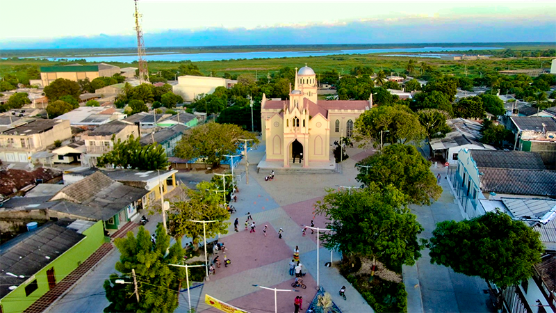

El relato de la noche en Malambo
FENÓMENOS PARANORMALES | MALAMBO, ATLÁNTICO

Una noche que llamó la atención de todo un municipio
En julio de 2009, una historia poco común comenzó a circular en Malambo, Atlántico. Una mujer llamada Rocío Salazar aseguró haber vivido una experiencia extraña en su propia vivienda, un episodio que rápidamente despertó la curiosidad de sus vecinos y terminó llegando a los medios de comunicación nacionales.
Según el relato publicado por la prensa, aquella noche Salazar se encontraba viendo videos musicales de Michael Jackson junto a sus hijos. Mientras compartían el momento y practicaban algunos pasos de baile del artista, la mujer afirmó que comenzó a percibir un intenso olor a formol.
Poco después, sus hijos le dijeron que habían observado una sombra detrás de ella. Los menores utilizaron un teléfono celular para grabar lo que describieron como unas figuras extrañas. Salazar contó posteriormente que también llegó a observar la grabación y que la experiencia le produjo mucho temor.
La noticia comenzó a despertar el interés de los habitantes de la zona. De acuerdo con las publicaciones de la época, varias personas se acercaron a la vivienda para conocer el supuesto registro que había sido captado con el celular.
¿Una aparición en Malambo?
El episodio ocurrió pocos días después de la muerte de Michael Jackson, el 25 de junio de 2009. En aquellos días circulaban por internet rumores sobre supuestas apariciones del cantante, especialmente después de que se difundiera un video que algunas personas interpretaron como una figura fantasmal en su antigua residencia de Neverland.
La coincidencia entre esos rumores y el episodio narrado por la familia hizo que algunos vecinos relacionaran las sombras observadas en Malambo con el espíritu del artista estadounidense.
Sin embargo, no existe una comprobación independiente que permita establecer qué aparecía realmente en la grabación, ni que las figuras tuvieran relación con Michael Jackson. La historia permanece como un testimonio difundido por los medios de comunicación y convertido en una curiosa anécdota del misterio en el Caribe colombiano.
Malambo: escenario de una historia singular
Malambo es un municipio del departamento del Atlántico, ubicado en el área metropolitana de Barranquilla y próximo al río Magdalena. Su historia, sus tradiciones y su relación con el territorio forman parte de la identidad cultural del Caribe colombiano.
En este escenario cotidiano ocurrió un relato que trascendió las fronteras del municipio y fue reproducido por diferentes medios. Más allá de las interpretaciones sobrenaturales, el caso muestra cómo una experiencia particular puede convertirse en una historia colectiva cuando despierta la curiosidad de toda una comunidad.
Ficha del caso
Lugar: Malambo, Atlántico, Colombia.
Fecha: Julio de 2009.
Categoría: Relato paranormal / tradición mediática.
Protagonista del testimonio: Rocío Salazar.
Estado: Relato periodístico no verificado.
Nota: esta página presenta un testimonio publicado por medios de comunicación en 2009. La supuesta aparición y la naturaleza de las sombras no han sido verificadas mediante evidencia independiente. El contenido se comparte con fines culturales, periodísticos y de exploración del misterio.